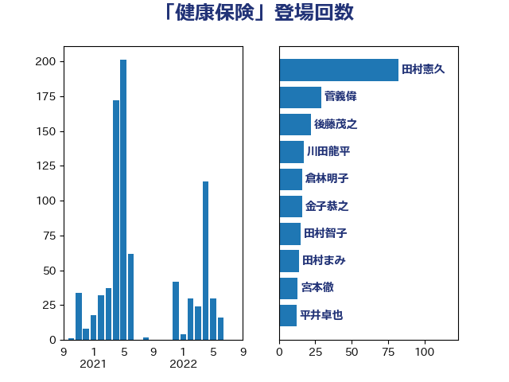

単語「健康保険」

| 田村憲久 | 自由民主党 | 82 回 |
| 菅義偉 | 自由民主党 | 29 回 |
| 後藤茂之 | 自由民主党 | 22 回 |
| 川田龍平 | 立憲民主党 | 17 回 |
| 倉林明子 | 日本共産党 | 16 回 |
| 金子恭之 | 自由民主党 | 16 回 |
| 田村智子 | 日本共産党 | 15 回 |
| 田村まみ | 国民民主党 | 14 回 |
| 宮本徹 | 日本共産党 | 13 回 |
| 平井卓也 | 自由民主党 | 12 回 |
| 岸田文雄 | 自由民主党 | 11 回 |
| 打越さく良 | 立憲民主党 | 11 回 |
| 東徹 | 日本維新の会 | 11 回 |
| 梅村聡 | 日本維新の会 | 11 回 |
| 石井苗子 | 日本維新の会 | 11 回 |
| 竹内譲 | 公明党 | 10 回 |
| 道下大樹 | 立憲民主党 | 10 回 |
| 小野田紀美 | 自由民主党 | 9 回 |
| 福島みずほ | 社会民主党 | 9 回 |
| 牧島かれん | 自由民主党 | 8 回 |
| 杉尾秀哉 | 立憲民主党 | 7 回 |
| 武田良太 | 自由民主党 | 6 回 |
| 足立康史 | 日本維新の会 | 6 回 |
| 伊佐進一 | 公明党 | 5 回 |
| 本田顕子 | 自由民主党 | 5 回 |
| 熊田裕通 | 自由民主党 | 5 回 |
| 矢倉克夫 | 公明党 | 5 回 |
| 石田昌宏 | 自由民主党 | 5 回 |
| 西村智奈美 | 立憲民主党 | 5 回 |
| 佐藤英道 | 公明党 | 4 回 |
| 吉田統彦 | 立憲民主党 | 4 回 |
| 塩田博昭 | 公明党 | 4 回 |
| 平木大作 | 公明党 | 4 回 |
| 本村伸子 | 日本共産党 | 4 回 |
| 武井俊輔 | 自由民主党 | 4 回 |
| 沢田良 | 日本維新の会 | 4 回 |
| 玉木雄一郎 | 国民民主党 | 4 回 |
| 自見はなこ | 自由民主党 | 4 回 |
| 藤川政人 | 自由民主党 | 4 回 |
| 西岡秀子 | 国民民主党 | 4 回 |
| 阿部知子 | 立憲民主党 | 4 回 |
| 吉田久美子 | 公明党 | 3 回 |
| 大島敦 | 立憲民主党 | 3 回 |
| 山本博司 | 公明党 | 3 回 |
| 岩渕友 | 日本共産党 | 3 回 |
| 浅野哲 | 国民民主党 | 3 回 |
| 石川博崇 | 公明党 | 3 回 |
| 萩生田光一 | 自由民主党 | 3 回 |
| 里見隆治 | 公明党 | 3 回 |
| 高木かおり | 日本維新の会 | 3 回 |
| 伊藤孝江 | 公明党 | 2 回 |
| 伊藤岳 | 日本共産党 | 2 回 |
| 吉良よし子 | 日本共産党 | 2 回 |
| 坂本哲志 | 自由民主党 | 2 回 |
| 小林史明 | 自由民主党 | 2 回 |
| 小沢雅仁 | 立憲民主党 | 2 回 |
| 山東昭子 | 自由民主党 | 2 回 |
| 山添拓 | 日本共産党 | 2 回 |
| 山田勝彦 | 立憲民主党 | 2 回 |
| 山田太郎 | 自由民主党 | 2 回 |
| 平林晃 | 公明党 | 2 回 |
| 後藤祐一 | 立憲民主党 | 2 回 |
| 橋本岳 | 自由民主党 | 2 回 |
| 石井啓一 | 公明党 | 2 回 |
| 石橋通宏 | 立憲民主党 | 2 回 |
| 酒井庸行 | 自由民主党 | 2 回 |
| 阿部司 | 日本維新の会 | 2 回 |
| 音喜多駿 | 日本維新の会 | 2 回 |
| 高木毅 | 自由民主党 | 2 回 |
| 上田英俊 | 自由民主党 | 1 回 |
| 中島克仁 | 立憲民主党 | 1 回 |
| 中谷一馬 | 立憲民主党 | 1 回 |
| 仁木博文 | 無所属 | 1 回 |
| 伊藤孝恵 | 国民民主党 | 1 回 |
| 古屋範子 | 公明党 | 1 回 |
| 古川禎久 | 自由民主党 | 1 回 |
| 古賀篤 | 自由民主党 | 1 回 |
| 吉川元 | 立憲民主党 | 1 回 |
| 嘉田由紀子 | 無所属 | 1 回 |
| 國重徹 | 公明党 | 1 回 |
| 堀井巌 | 自由民主党 | 1 回 |
| 塩川鉄也 | 日本共産党 | 1 回 |
| 大口善徳 | 公明党 | 1 回 |
| 大塚耕平 | 国民民主党 | 1 回 |
| 大家敏志 | 自由民主党 | 1 回 |
| 宮本岳志 | 日本共産党 | 1 回 |
| 小宮山泰子 | 立憲民主党 | 1 回 |
| 小西洋之 | 立憲民主党 | 1 回 |
| 山崎正恭 | 公明党 | 1 回 |
| 山田美樹 | 自由民主党 | 1 回 |
| 岸真紀子 | 立憲民主党 | 1 回 |
| 島村大 | 自由民主党 | 1 回 |
| 川合孝典 | 国民民主党 | 1 回 |
| 平沢勝栄 | 自由民主党 | 1 回 |
| 村井英樹 | 自由民主党 | 1 回 |
| 松山政司 | 自由民主党 | 1 回 |
| 枝野幸男 | 立憲民主党 | 1 回 |
| 梶山弘志 | 自由民主党 | 1 回 |
| 榛葉賀津也 | 国民民主党 | 1 回 |
| 櫻井周 | 立憲民主党 | 1 回 |
| 武見敬三 | 自由民主党 | 1 回 |
| 浅田均 | 日本維新の会 | 1 回 |
| 白石洋一 | 立憲民主党 | 1 回 |
| 石垣のりこ | 立憲民主党 | 1 回 |
| 石川大我 | 立憲民主党 | 1 回 |
| 神谷裕 | 立憲民主党 | 1 回 |
| 福山哲郎 | 立憲民主党 | 1 回 |
| 福岡資麿 | 自由民主党 | 1 回 |
| 福田昭夫 | 立憲民主党 | 1 回 |
| 竹谷とし子 | 公明党 | 1 回 |
| 西村康稔 | 自由民主党 | 1 回 |
| 西銘恒三郎 | 自由民主党 | 1 回 |
| 野間健 | 立憲民主党 | 1 回 |
| 長友慎治 | 国民民主党 | 1 回 |
| 高橋光男 | 公明党 | 1 回 |